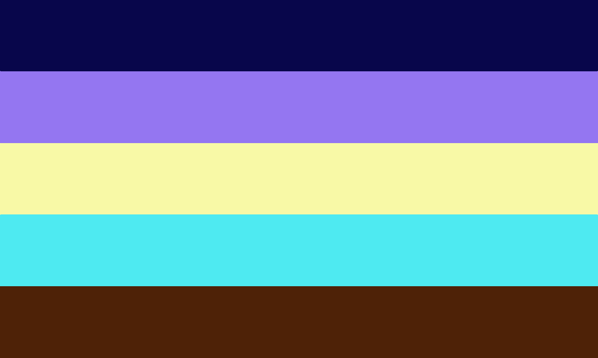

Knightgender !! :: A gender that feels protective, and strong. The person might feel like their identity feels achieved, loyal, like it’s accomplished.
Also can be used if you gender simply is related to knights, or if your gender is just A Knight.